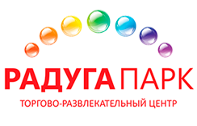

SHOPPING CENTER MANAGER’s Congress
Слоган компании


О МЕРОПРИЯТИИ
Тематические круглые столы по методике формирования качественной управляющей команды ТЦ Возможность продемонстрировать собственные профессиональные компетенции на крупнейшем форуме управляющих ТЦ и обменяться опытом с коллегами из других регионовТематические сессии, неформальное общение, гала-вечер с развлекательной программой и многое другое…
Начиная с 2016 года, SHOPPING CENTER MANAGER’s Congress будет проходить ежегодно.
Конгресс уже рекомендуют
-
Тарас Табаков
-
Тарас Табаков
-
Тарас Табаков
-
Тарас Табаков
-
Тарас Табаков
-
Тарас ТабаковУправляющий ТРЦ «Радуга Парк»«Формат единого Конгресса для Управляющих Торговыми центрами безусловно актуален и необходим! Ведь на сегодняшний момент нет методики управления, которую можно одинаково успешно использовать для любого торгового центра. Именно поэтому основная задача мероприятия «Shopping Center Manager’s Congress» – создать платформу, где можно будет обмениваться знаниями и систематизировать накопленный опыт. И если в дальнейшем наша или другая управляющая компания сможет применить полученные знания на практике и оптимизировать работу своего ТЦ, – значит задача конгресса выполнена».
-
Тарас ТабаковУправляющий ТРЦ «Радуга Парк»«Формат единого Конгресса для Управляющих Торговыми центрами безусловно актуален и необходим! Ведь на сегодняшний момент нет методики управления, которую можно одинаково успешно использовать для любого торгового центра. Именно поэтому основная задача мероприятия «Shopping Center Manager’s Congress» – создать платформу, где можно будет обмениваться знаниями и систематизировать накопленный опыт. И если в дальнейшем наша или другая управляющая компания сможет применить полученные знания на практике и оптимизировать работу своего ТЦ, – значит задача конгресса выполнена».
-
Тарас ТабаковУправляющий ТРЦ «Радуга Парк»«Формат единого Конгресса для Управляющих Торговыми центрами безусловно актуален и необходим! Ведь на сегодняшний момент нет методики управления, которую можно одинаково успешно использовать для любого торгового центра. Именно поэтому основная задача мероприятия «Shopping Center Manager’s Congress» – создать платформу, где можно будет обмениваться знаниями и систематизировать накопленный опыт. И если в дальнейшем наша или другая управляющая компания сможет применить полученные знания на практике и оптимизировать работу своего ТЦ, – значит задача конгресса выполнена».
-
Тарас ТабаковУправляющий ТРЦ «Радуга Парк»«Формат единого Конгресса для Управляющих Торговыми центрами безусловно актуален и необходим! Ведь на сегодняшний момент нет методики управления, которую можно одинаково успешно использовать для любого торгового центра. Именно поэтому основная задача мероприятия «Shopping Center Manager’s Congress» – создать платформу, где можно будет обмениваться знаниями и систематизировать накопленный опыт. И если в дальнейшем наша или другая управляющая компания сможет применить полученные знания на практике и оптимизировать работу своего ТЦ, – значит задача конгресса выполнена».
-
Тарас ТабаковУправляющий ТРЦ «Радуга Парк»«Формат единого Конгресса для Управляющих Торговыми центрами безусловно актуален и необходим! Ведь на сегодняшний момент нет методики управления, которую можно одинаково успешно использовать для любого торгового центра. Именно поэтому основная задача мероприятия «Shopping Center Manager’s Congress» – создать платформу, где можно будет обмениваться знаниями и систематизировать накопленный опыт. И если в дальнейшем наша или другая управляющая компания сможет применить полученные знания на практике и оптимизировать работу своего ТЦ, – значит задача конгресса выполнена».
1. Практический блок – рабочая мастерская в ТЦ Columbus
- Все секреты одного из самых успешных новых торговых объектов столицы
- Экскурсия по объекту
- Возможность заглянуть «за кулисы»
2. Блок лидерства
- Создание эффективной команды в ТЦ. Ключевые позиции и подбор персонала
- Коммуникация лидера. Секреты общения с арендаторами и подрядчиками. И - самое главное - с собственником
- Тайм-менеджмент: как успевать решать разноплановые задачи, так чтобы оставалось время на семью и на сон
*** все эти темы будут подкрепляться примерами из каждодневной практики управляющего ТЦ**
3. Блок стратегии
- Как определить единственно верную для вашего ТЦ концепцию tennant mix
- Как отсортировать "пустой" трафик и управлять им
- Как превратить свой ТЦ в ключевой социальный объект города
- Как строить отношения с властями и помогать развивать инфраструктуру города
В программе возможны незначительные изменения / дополнения.
Спикеры по каждой из тем будут заявлены до 20.04.2016
4. Блок тактики
- Навигация в ТЦ: почему ни у кого не получается и как сделать так, чтобы всем было удобно
- Как провести тендер так, чтобы не выбрать в итоге "дёшево и сердито"
- Составляем идеальный договор аренды
- Как вести переговоры с арендаторами-должниками
5. Блок маркетинга
- Кто должен знать о вашем ТЦ и как заставить этих людей приходить к вам
- ТЦ - территория рекламы: как научиться продавать свободные поверхности
- Звуки, запахи и НЛП: как ненавязчиво помочь арендаторам увеличить оборот
6. Интерактивный неформальный блок
- Командный квест по одному из московских ТЦ
Первый в своём роде справочник по персоналиям – действующим управляющим торговыми центрами страны, витрина лучших менеджерских кадров в сфере торговой недвижимости.
Содержит данные о профессиональном опыте управляющего и основных характеристиках торгового объекта, команду которого он возглавляет на данный момент.
Также в каталоге представлена информация о компаниях, предлагающих услуги управления ТЦ.
Для того, чтобы попасть в каталог, нужно заполнить анкету
Условия размещения объявлений в разделе «Профили компаний» можно узнать, написав на адрес ovchinnikov@rcsc.info
Каталог будет представлен на открывающемся 25 мая в Москве SHOPPING CENTER MANAGER’S CONGRESS.
управляющих ТЦ
+ рабочая мастерская
неформальный блок

- 

Место проведения уточняется
25-27 мая 2016
09:00 – 21:00
http/ссылка на профиль